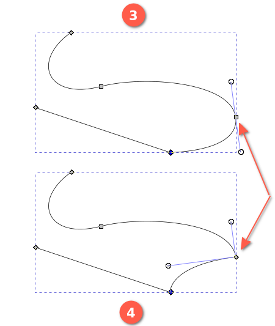
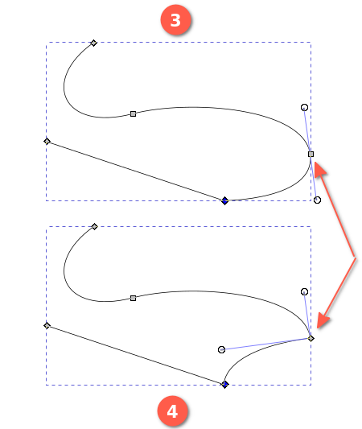

钢笔工具
快捷键：B 或者 Shift+F6
钢笔工具(  )即也叫贝塞尔曲线工具，专门用来绘制路径。此工具通常要与节点工具(
)即也叫贝塞尔曲线工具，专门用来绘制路径。此工具通常要与节点工具(  )配合使用。
)配合使用。
贝塞尔曲线最典型的应用就是各种字体，包括英文字体和中文字体。
提示
驿窗注：贝塞尔曲线(Bezier Curve)工具非常强大也非常专业，绝大多数与图形图像有关的软件，比如AI、Blender、CorelDRAW、GIMP、PS等，都会有贝塞尔曲线工具。所以，如果希望成为行业内的专业人员，请务必熟练掌握贝塞尔曲线工具与节点工具(
)，两者配合使用，可以创建极为复杂且极为精准的路径。
关于节点工具的详细说明，请参考 节点工具
操作方法
切换到钢笔工具(
 )后，先确保工具选项激活了(
)后，先确保工具选项激活了(  )图标，然后鼠标在画布上点击并拖动一段距离然后松开鼠标，此时第一个节点已经创建完成；继续把鼠标移动到另一个位置，然后点击并拖动，再松开鼠标，此时第二个节点创建完成。两个节点之间的线就是一段路径，也叫贝塞尔曲线。
)图标，然后鼠标在画布上点击并拖动一段距离然后松开鼠标，此时第一个节点已经创建完成；继续把鼠标移动到另一个位置，然后点击并拖动，再松开鼠标，此时第二个节点创建完成。两个节点之间的线就是一段路径，也叫贝塞尔曲线。按空格键可以临时切换到选择工具(
 )，再按空格键则切换回钢笔工具。
)，再按空格键则切换回钢笔工具。对于生成的曲线，您可以设置填充属性和描边属性，效果类似于圆形工具创建的弧。
继续上述操作会得到更长更复杂的路径。
路径绘制完成后，点击鼠标右键或者按Enter键即可结束路径绘制。
如果想创建直线路径，那么每一次点击时不要拖动鼠标，点击后直接松开鼠标，然后继续下一次点击，如些操作，可以得到直线型路径。
路径绘制过程中，按Delete键或者Del键，可以删除最后创建的节点，从前一个节点继续绘制；连续按Delete键或者Del键，会依次删除最后创建的节点。Ctrl+Z可以代替Delete键或者Del键。
路径绘制过程中，如果想删除整个路径，或者取消当前绘制的整个路径，可以按Esc键。
如果想在一个已有的路径上继续绘制，请选中该路径，然后点击一个端点(或者点击一个端点并拖动一段距离)，然后松开鼠标，之后按上面的方法继续绘制就可以。
如果想封闭路径，请在路径绘制好以后，点击第一个端点即可。
贝塞尔曲线的构成
贝塞尔曲线由以下三个参数要素构成：
节点
节点手柄
相邻节点之间的线段
两个节点连接就成为一条曲线，每条曲线都有两个节点。一条曲线的一个节点与另一条曲线的一个节点相连接，形成由三个节点和两条曲线组成的路径。如此往复，形成更复杂的路径。
在路径中，每一个节点都可以有一个手柄。直线两端的节点不需要手柄。复杂连续的曲线等同于多条简单曲线的端点相互连接而来。
 


图 -1：贝塞尔曲线的构成 (点击查看大图 )
关于节点的详细说明，请参考 节点工具 。
路径填充规则
当路径比较复杂时，例如路径本身相互重叠，那么填充时就需要有一定的规则，否则无法准确计算。Inkscape的填充规则有两个，一个是奇偶规则，另一个是非零规则。注意，这些规则仅适用于填充，不适用于描边。
奇偶规则与非零规则的设置位置：

奇偶与非零设置
我们来看两个示例：
奇偶与非零示例 -1 (svg原图 )
上面示例-1是一条稍微复杂的路径，左图没有填充，只有描边；中间是奇偶填充；右侧是非零填充。
奇偶与非零示例 -2 (svg原图 )
示例-2中的填充看起来更复杂。所以，在创建复杂的路径对象时，用多个简单路径进行组合从而得到复杂路径，有时可以避免很多问题。
工具选项
(
)：常规模式。此模式下，点击不拖动会创建直线，点击拖动会创建曲线。(
 )：螺旋线模式。此模式下，inkscape会尝试用螺旋线来连接所有新创建的节点。(节点手柄可能会失效)
)：螺旋线模式。此模式下，inkscape会尝试用螺旋线来连接所有新创建的节点。(节点手柄可能会失效)(
 )：B样条曲线。此模式下，会限制只能绘制B样条曲线。
)：B样条曲线。此模式下，会限制只能绘制B样条曲线。
绘制过程中，您可以把接下来要画的90°垂直直线改为0°直线，方法是按Shift键。
( Shape )：形状模式。此模式下，在路径绘制完成后，会为路径添加一个形状(类似笔刷)，具体形状取决于以下内容：
无：不添加任何形状。
三角正向：从起点到终点画一个三角形，终点为三角形的尖角，起点为三角形的底部。
三角逆向：从起点到终点画一个三角形，三角形的方向与上面的 三角正向 相反。
椭圆：从起点到终点画一个椭圆形。
从剪贴板：从起点到终点画一个形状，此形状之前已经复制到剪贴板中。例如画一个星形，然后把这个星形复制到剪贴板，再用钢笔工具使用 从剪贴板 选项画一段路径，路径画好后会自动生成一个沿路径变形的星形。
从剪贴板弯折：调用 LPE→弯折 功能应用到剪贴板中的对象上使其变形。此操作不仅应用形状，也应用描边、填充和尺寸。
最近应用：inkscape会记住最后一次的设置，选择此项，就表示使用最后一次的设置。(有时会结果比较奇怪)
示例2说明：上下两组，每组从左到右有三个对象，左侧对象是已经画好的一个形状，把形状复制到剪贴板中；中间对象是用钢笔工具创建的路径，工具选项中的 形状 选择“从剪贴板”；右侧对象是路径创建好以后自动根据剪贴板内容生成的最终效果。

形状示例 3，从剪贴板弯折
示例3说明：最上面一行对象是提前画好的一个形状(七个圆球)，已经填充了颜色并组成一个群组，复制到剪贴板。中间行左侧曲线是画的路径；中间行右侧对象是路径画好后自动根据剪贴板内容生成的最终效果。最下面左侧曲线是画的路径，只不过尺寸更大一些；最下面右侧对象是路径画好后自动根据剪贴板内容生成的最终效果。
下面示例4与示例3类似：
形状示例 4，从剪贴板弯折


{kind=link}
{kind=link}
{kind=link}
{kind=link}
( 缩放 )：针对前一项Shape使用。此选项会按比例缩放即将应用到路径上的形状(包括剪贴板中的对象)，然后再按路径弯折：
形状示例 5，从剪贴板弯折，缩放=4
示例5说明：下面中间的对象是缩放=1；其它参数不变。如果修改缩放=4，然后重新画一个相同大小和形状的路径，会得到右侧的效果。